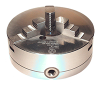

Патрон токарный 3-125.03.11 Ø125
Тип 3 – с креплением непосредственно на фланцевые концы шпинделей по ГОСТ 12595
Исполнение 1 – с цельными кулачками
Диаметр патрона - 125 мм
Подать заявку
Комплект:
- Патрон с прямыми кулачками
- Кулачки обратные
- Ключ
- Масленка
- Паспорт
- Крепеж для установки патрона на шпиндель станка
Классы точности по ГОСТ 1654:
Н
— Нормальный
П
— Повышенный
В
— Высокий
А
— Особо высокий
Размеры:
| D | D1 | D2 | D3 | nxd | h | H | H1 |
|---|---|---|---|---|---|---|---|
| 125 | 32 | 95 | 108 | 3xM8 | 4 | 56 | 75 |
Суммарная статическая сила зажима кулачкам: Ртах Н = 37000
Максимально допустимая частота вращения:
N max min -1 = 4000
Гарантия: 12 месяцев со дня эксплуатации
По заказу потребителя патроны исполнения 1 комплектуются полусырыми кулачками, патроны исполнения 2
комплектуются кулачками (мягкими, калёными прямыми,
калёными обратными) и крепежными винтами. В новых токарных патронах диаметром от 200 до 400 мм для
повышения их надёжности изменена конструкция узла
«шестерня-втулка-стопор», что позволило исключить износ стопора, увеличить точность осевой фиксации
шестерни и радиальную жёсткость узла. Техническое решение
самоцентрирующего токарного патрона запатентовано ОАО «БелТАПАЗ» в 2007 году (патент BY 3335 U). Кроме
того, токарные патроны снабжены устройством ограничения
вылета кулачков в виде установленного в пазу корпуса подпружиненного упора для взаимодействия с боковой
поверхностью зуба рейки кулачка, что обеспечивает
требования международных стандартов предъявляемые к продукции данного класса по безопасности, в
частности IS0 16156. Техническое решение защищено в 2012 году
патентом BY 8624 U. Отличия данного решения от известных состоит в том, что в новой конструкции
токарного патрона для удобства обслуживания и быстрой смены
кулачков упор установлен в Т-образном пазу корпуса подвижно, а посредством пружины имеет возможность
возврата в положение, при котором препятствует
перемещению кулачков на расстояние больше предельно допустимого. Также с целью увеличения хода зажимных
кулачков и расширения диапазона закрепляемых
заготовок рейка со стороны торца одного из кулачков имеет срез определённой части зубьев для захода
ограничительного упора.
Текст 2
Текст 3
Алексей Пономарев
21.04.2016
Мне понравилась чёткая работа магазина. Все изменения в состоянии заказа отражаются в приходящих смс и сообщениях на почту. Менеджер позвонил на следующей
день, мы договорились, что товар в пункте выдачи полежит на несколько дней больше - до выходных, когда мне удобнее было получить.
Алексей Пономарев
21.04.2016
Мне понравилась чёткая работа магазина. Все изменения в состоянии заказа отражаются в приходящих смс и сообщениях на почту. Менеджер позвонил на следующей
день, мы договорились, что товар в пункте выдачи полежит на несколько дней больше - до выходных, когда мне удобнее было получить.
Алексей Пономарев
21.04.2016
Мне понравилась чёткая работа магазина. Все изменения в состоянии заказа отражаются в приходящих смс и сообщениях на почту. Менеджер позвонил на следующей
день, мы договорились, что товар в пункте выдачи полежит на несколько дней больше - до выходных, когда мне удобнее было получить.
СОВЕТУЕМ ПОСМОТРЕТЬ
Патрон токарный 3-х
кулачковый Ø 200 3-200.31.01

Патрон токарный 3-х
кулачковый Ø 200 3-200.31.01
Патрон токарный 3-х
кулачковый Ø 200 3-200.31.01
Патрон токарный 3-х
кулачковый Ø 200 3-200.31.01